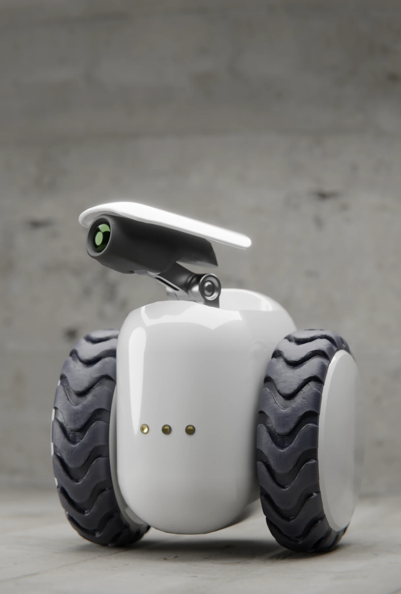
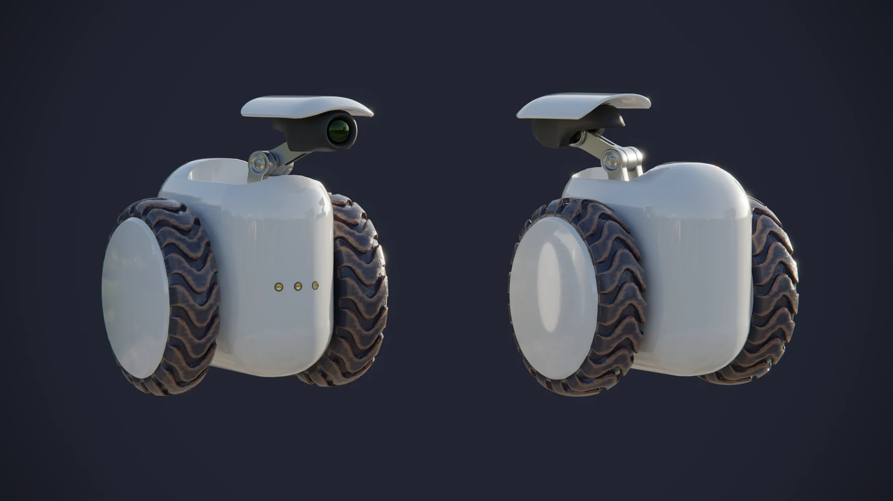
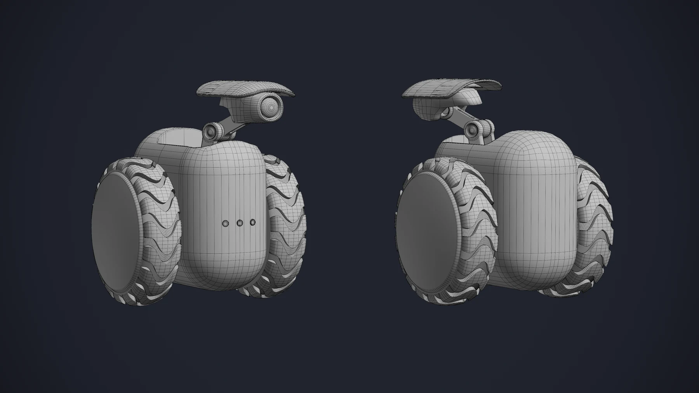

Pathfinder / 로봇
바퀴형 로봇을 모델링하고 Unreal Engine 5에서 이동 애니메이션을 구현한 개인 프로젝트.

01 / Design
바퀴형 이동 로봇
바퀴형 로봇의 기본 모델과 애니메이션을 제작했습니다.


02 / Animation in Unreal
Unreal Engine 애니메이션
Unreal Engine의 Blend Space로 이동 속도에 따른 몸체와 머리 움직임을 구현했습니다.
ROLE & CREDITS
담당 작업
개인 프로젝트: 모델링, 리깅, 애니메이션, Unreal Engine 적용